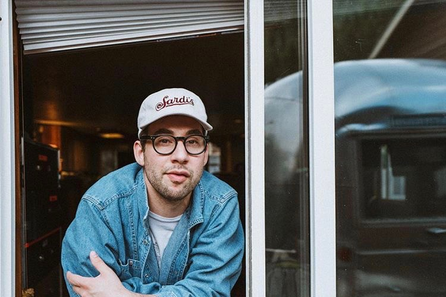

This is my about page! You're about to see more pictures!
Go back
The french fry and chocolate milk shake combination is one of the best combinations the world has to offer.

My favorite modern musician, Jack Antonoff.
Kansas City does have cool looking buildings - in my opinion.
I helped create the plans for the Made in KC Cafe, so it's near and dear to my heart.
The cutest theatre in KC that plays all of the good independent films. Plus, it's pink.